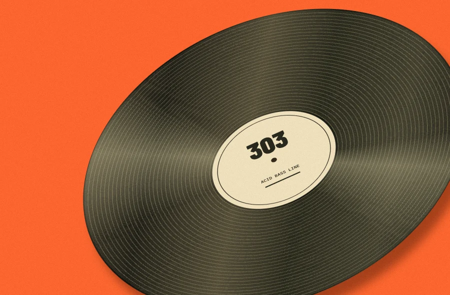
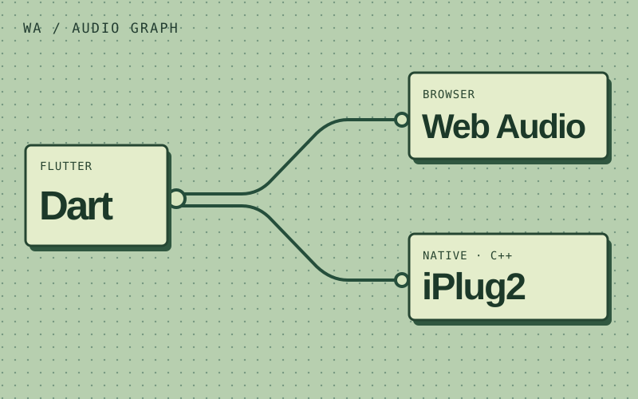
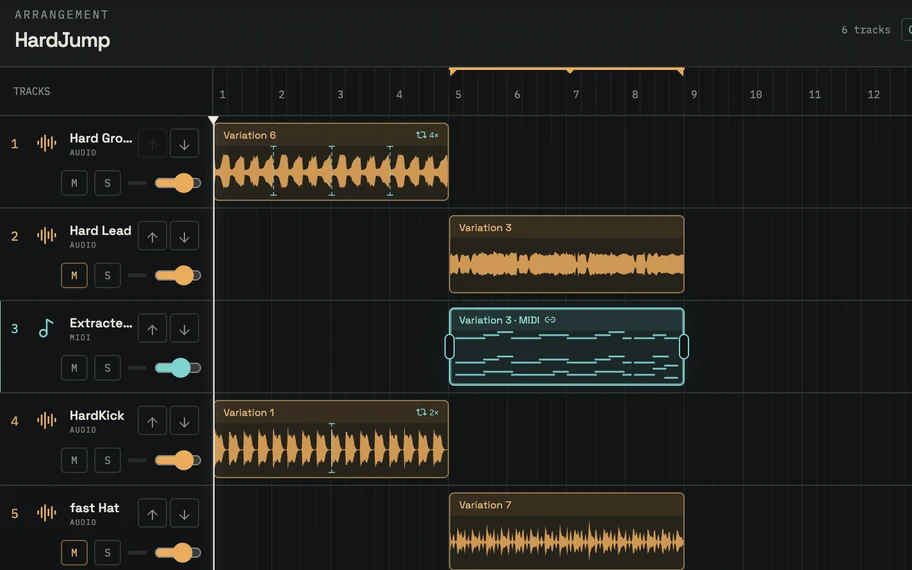
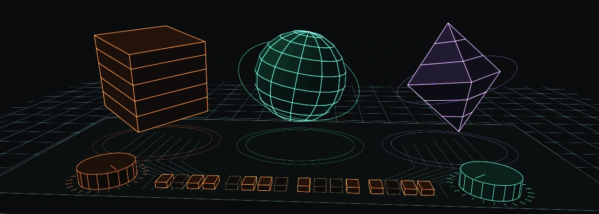

WEB AUDIO / SEQUENCER
acidBros
두 줄의 애시드 베이스와 드럼머신을 한 브라우저에서 연주하는 16스텝 스튜디오.

두 줄의 애시드 베이스와 드럼머신을 한 브라우저에서 연주하는 16스텝 스튜디오.

Flutter에서 Web Audio 방식으로 소리를 설계합니다. 같은 Dart 코드가 웹에서는 브라우저, 모바일과 데스크톱에서는 iPlug2 엔진을 사용합니다.

생성한 오디오를 MIDI로 채보하고 같은 타임라인에서 편집·편곡하는 로컬 우선 음악 제작 도구입니다.
위에서 만든 패턴을 재생해 보세요.
저음은 큐브, 중음은 구체, 고음은 팔면체를 움직입니다.
